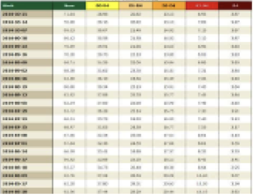
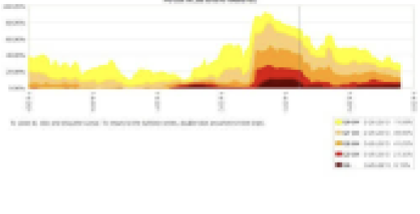
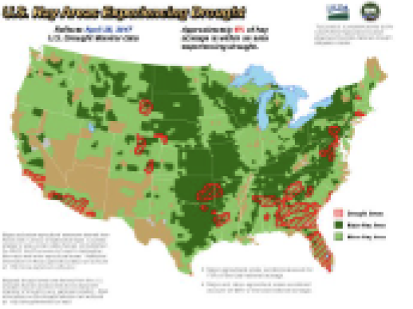
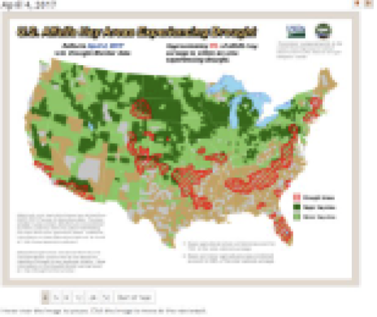

Agriculture in Drought for May 24, 2022
All values listed below are percentages
| 1 | Alfalfa Hay acreage | 44 |
|---|---|---|
| 2 | Cattle acreage | 52 |
| 2 | Hay acreage | 43 |
| 2 | Hogs and Pigs acreage | 24 |
| 2 | Milk Cows acreage | 46 |
Data Table

Data Graph

Maps

Animations

- GrassCast & Ranch Drought Monitoring Dashboard
- Market info – hay stores or price data, livestock sales data?
- ERS, AMS, NASS
- Submit a Report to CMOR
- NDMC Database of Resources by State
- Link to Climate Hubs & Resources